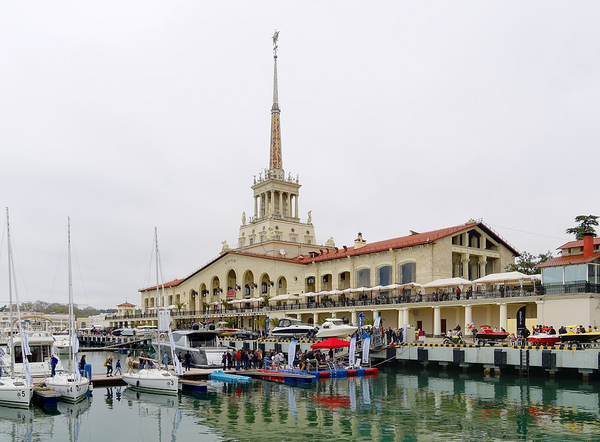

Сочи- глаза земли. Это только кажется, что море большое.
На самом деле оно маленькое, бесследно в нем ничего не исчезает
Со́чи (абх. Шәача, адыг. Шъачэ) — город в России, расположен на северо-восточном побережье Чёрного моря (Черноморское побережье России) в Краснодарском крае, на расстоянии 1620 км от Москвы. Административный центр муниципального образования город-курорт Сочи. Сочи — крупнейший курортный город России, важный транспортный узел, а также крупный экономический и культурный центр черноморского побережья России. Неофициально именуется также летней, южной и курортной «столицей» России
В 2012 году журнал Forbes признал Сочи лучшим городом для ведения бизнеса в стране. В 2007 году Сочи избран столицей XXII зимних
XXII зимних Олимпийских игр. 15 сентября 2009 года Сочи вступил во Всемирный союз олимпийских городов. В период подготовки к Олимпиаде на развитие города и его инфраструктуры потратили 500 млрд рублей. В 2018 году город принял матчи Чемпионата мира по футболу.

Этимиология
Образовавшийся в 1869 году посад уже имел название Сочи. Название Сочи относится к городу и реке, впадающей в Чёрное море в Центральном районе города Сочи. Отмечается широкий спектр вариаций топонима (и, соответственно, гидронима) Сочи в различных источниках: Сочи, Соча и Сучали; Саша, Садша и Зутша у Белля; Сочи или Саше; Сочи, Саше и Сочипсы; Сфеши (река) и Сшаше (аул) (шапсугский вариант); Шаша; Сахи, Сучал и Саши, в других источниках — Шаше, Сшатче, Сочипсе. По утверждению Бгажбы Х. С., на убыхском языке название реки Сочи звучало как Сшача, а по-абхазски — Шәача. Но впервые местные названия (этнонимы) упоминаются у Эвлия Челеби, турецкого путешественника, который в 1641 году описывает племя Садше (Sadşe), рядом упоминает племя Суча (Suça). Валуйский В. М. идентифицирует названия Садша и Суджа и пишет, что урочище Суджа объединяет: Шлабистага — на правом берегу р. Сочи, чуть выше приустья (по-видимому, нижняя часть долины ручья Хлудовского, правого притока р. Сочи); р. Хокоча (ручей Верещагинка); р. Сочепа или Сочапа (Гнилушка); аулы Арлана — в верховьях рек Сочапа и Бзугу. Флавий Арриан в 137 г. на месте современной р. Сочи называет реку Масаитику, а Псевдо-Арриан в V в. пишет о реке Масетике, в этих наиболее древних известных нам наименованиях современной р. Сочи мы имеем, по-видимому, двусоставную основу «ма» и «саити-сети»), и второй корень очень созвучен с топонимом «Сочи». Это сходство будет ещё более полным, если учесть, что в латинском алфавите нет буквы для обозначения звука «ч» и он мог быть обозначен через более глухое «Т» (ср. для убыхского языка характерен тыльный звук «тч»). Первая часть этого названия «ма» близка к адыгейскому и убыхскому миа (меа) — «яблоня».
Климат
Прибрежная часть города Сочи, как и весь участок российского черноморского побережья южнее Туапсе, расположен в зоне влажных субтропиков (Cfa согласно классификации климата Кёппена)[26], что сильно отличает этот регион от более северного участка побережья от Анапы до Туапсе, где господствует типичный полусухой средиземноморский климат.Территория города-курорта Сочи охватывает большую часть южного склона Кавказа от берега Чёрного моря до вершин Главного Кавказского хребта высотой до 3500 метров над уровнем моря[27]. Поэтому в Сочи можно выделить несколькоьприродно-климатических зон[28]: прибрежная зона (до 200 метров над уровнем моря) шириной 450—2000 метров; предгорная зона (201—600 метров над уровнем моря); высокогорная зона (1001—1700 метров над уровнем моря) и Альпийская зонаь(1701—1800 метров над уровнем моря). На климат Сочи оказывают значительное влияние море (летом от него прохладнее, зимой оно согревает) и горы (ограждают от холодных северных ветров). Климат очень влажный (особенно вдоль побережья). Подобный климат наблюдается в соседней Абхазии, а также на юго-востоке США (штаты Миссисипи, Луизиана, Алабама, Джорджия).